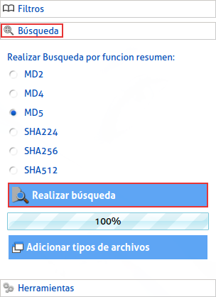

|
Para realizar una búsqueda debemos dar clic en la opción "Búsqueda" en el menú a la izquierda, luego podrá escoger la función hash por la cual la aplicación reconoce los archivos repetidos y para iniciar la búsqueda oprima el botón "Realizar búsqueda", esta búsqueda tendrá en cuenta todas las configuraciones que usted realizo en los filtros y al realizarse, estos filtros volverán a estar vacíos. |
|  |